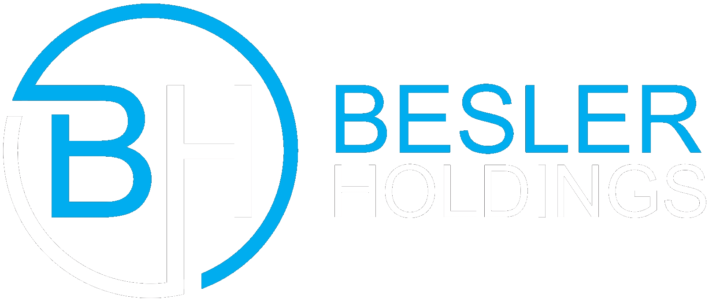

<!DOCTYPE html>
<html lang="en">
<head>
    <meta charset="UTF-8">
    <meta name="viewport" content="width=device-width, initial-scale=1.0">
    <title>BESLER Webinar: Guide to Appeals | Besler Holdings</title>
    <meta name="description" content="Recap of BESLER's Guide to Appeals webinar on April 3, 2024, featuring experts Christina Brown, Kristin DeGroat, and Leslie Goldsmith. Covering cost reports, PRRB appeals, teamwork, and more.">
    <script>
<link rel="stylesheet" href="css/tailwind.min.css">
    <style>
        /* Light Mode: Executive Navy */
        :root {
            --primary: #007BFF;
            --accent: #F59E0B;
            --bg-body: #F8FAFC;
            --bg-section: #F1F5F9;
            --bg-card: #FFFFFF;
            --text-main: #1E293B;
            --text-secondary: #475569;
            --nav-bg: #0F172A;
        }

        /* Dark Mode: Midnight Premium */
        .dark {
            --primary: #60A5FA;
            --accent: #FFD700;
            --bg-body: #0F172A;
            --bg-section: #1E293B;
            --bg-card: #334155;
            --text-main: #F8FAFC;
            --text-secondary: #CBD5E1;
            --nav-bg: #0F172A;
        }

        body {
            background-color: var(--bg-body);
            color: var(--text-main);
        }

        .theme-bg-section {
            background-color: var(--bg-section);
        }

        .theme-bg-card {
            background-color: var(--bg-card);
        }

        .theme-text-secondary {
            color: var(--text-secondary);
        }

        .text-primary {
            color: var(--primary);
        }

        .bg-primary {
            background-color: var(--primary);
        }

        .text-accent {
            color: var(--accent);
        }

        .nav-bg {
            background-color: var(--nav-bg);
        }
    </style>
</head>
<body class="font-sans antialiased transition-colors duration-300">
    <!-- Navbar -->
    <nav class="sticky top-0 z-50 shadow-md py-4 border-b border-gray-700/50" style="background-color: #0F172A;">
        <div class="max-w-6xl mx-auto px-4 flex justify-between items-center">
            <a href="index.html" class="nav-logo flex items-center gap-3">
                
                
                <span class="text-white font-bold text-xl hidden sm:block">Besler Holdings</span>
            </a>
            <div class="flex items-center gap-4">
                <button id="theme-toggle" class="p-2 rounded-lg bg-white/10 hover:bg-white/20 transition-colors border border-white/20" title="Toggle Light/Dark">
                    <svg id="sun-icon" class="w-6 h-6 text-yellow-400 hidden" xmlns="http://www.w3.org/2000/svg" fill="none" viewBox="0 0 24 24" stroke-width="1.5" stroke="currentColor">
                        <path stroke-linecap="round" stroke-linejoin="round" d="M12 3v2.25m6.364.386l-1.591 1.591M21 12h-2.25m-.386 6.364l-1.591-1.591M12 18.75V21m-4.773-4.227l-1.591 1.591M5.25 12H3m4.227-4.773L5.636 5.636M15.75 12a3.75 3.75 0 11-7.5 0 3.75 3.75 0 017.5 0z" />
                    </svg>
                    <svg id="moon-icon" class="w-6 h-6 text-yellow-300" xmlns="http://www.w3.org/2000/svg" fill="none" viewBox="0 0 24 24" stroke-width="1.5" stroke="currentColor">
                        <path stroke-linecap="round" stroke-linejoin="round" d="M21.752 15.002A9.718 9.718 0 0118 15.75c-5.385 0-9.75-4.365-9.75-9.75 0-1.33.266-2.597.748-3.752A9.753 9.753 0 003 11.25C3 16.635 7.365 21 12.75 21a9.753 9.753 0 009.002-5.998z" />
                    </svg>
                </button>
            </div>
        </div>
    </nav>

    <!-- Hero -->
    <header class="text-center py-20 min-h-[40vh] flex items-center justify-center" style="background: linear-gradient(135deg, #0f172a 0%, #1e293b 50%, #334155 100%);">
        <div class="max-w-4xl mx-auto px-4">
            <p class="text-lg mb-4" style="color: var(--accent);">Webinar</p>
            <h1 class="text-4xl md:text-5xl font-bold mb-4" style="color: #F8FAFC;">BESLER Webinar: Guide to Appeals</h1>
            <p class="text-xl font-light mt-6" style="color: #FFD700;">April 3, 2024</p>
        </div>
    </header>

    <!-- Article Content -->
    <section class="theme-bg-section py-20 transition-colors duration-300">
        <div class="max-w-4xl mx-auto px-4">
            <div class="theme-bg-card shadow-xl rounded-2xl p-8 md:p-12 border" style="border-color: var(--bg-section);">
                
                <div class="prose max-w-none">
                    <p class="text-lg theme-text-secondary mb-8 leading-relaxed">
                        BESLER's "Guide to Appeals" webinar on April 3, 2024, offered critical insights into navigating the complex world of Medicare reimbursement appeals. This session equipped attendees with practical strategies to maximize recovery and minimize financial losses.
                    </p>

                    <p class="theme-text-secondary mb-8 leading-relaxed">
                        Featuring renowned industry experts: <strong>Christina Brown</strong>, Director of Reimbursement at BESLER; <a href="kristin-degroat.html" class="text-primary hover:underline">Kristin DeGroat</a>, General Counsel at BESLER; and <strong>Leslie Goldsmith</strong>, Partner at Bass, Berry & Sims.
                    </p>

                    <div class="bg-blue-50 dark:bg-blue-900/20 border-l-4 border-primary p-6 mb-8 rounded-r-lg">
                        <p class="theme-text-secondary italic">
                            <strong class="text-primary">Expert Guidance:</strong> Learn from top professionals on cost report strategies, PRRB appeals, and collaborative approaches to reimbursement success. Access related resources on <a href="hospital-reimbursement-appeals.html" class="text-primary hover:underline">Hospital Reimbursement Appeals</a>.
                        </p>
                    </div>

                    <h2 class="text-3xl font-bold text-primary mb-6 mt-12">1. Cost Reports</h2>
                    <p class="theme-text-secondary mb-6 leading-relaxed">
                        Essential background on cost reports, including protested amounts, amendments, and reopenings. Attendees gained clarity on preserving appeal rights and correcting errors effectively.
                    </p>
                    
                    <h3 class="text-2xl font-bold text-primary mb-4 mt-10">Background, Protested Amounts, Amendments, Reopenings</h3>
                    
                    <p class="theme-text-secondary mb-8 leading-relaxed">
                        Key strategies for handling disputed costs, self-disallowances, and timing for amendments versus reopenings were thoroughly discussed.
                    </p>

                    <h2 class="text-3xl font-bold text-primary mb-6 mt-12">2. Provider Reimbursement Review Board (PRRB) Appeals</h2>
                    
                    <p class="theme-text-secondary mb-6 leading-relaxed">
                        Comprehensive overview of PRRB appeals, including filing requirements, the full life cycle of an appeal, and commonly appealed issues.
                    </p>

                    <h3 class="text-2xl font-bold text-primary mb-4 mt-10">Overview, Filing Requirements, Life Cycle, Commonly Appealed Issues</h3>
                    
                    <p class="theme-text-secondary mb-8 leading-relaxed">
                        Practical advice on deadlines, documentation, process stages, and high-impact issues that hospitals frequently challenge.
                    </p>

                    <h2 class="text-3xl font-bold text-primary mb-6 mt-12">3. Teamwork</h2>
                    
                    <p class="theme-text-secondary mb-6 leading-relaxed mb-8">
                        Emphasis on the importance of cross-functional collaboration between legal, reimbursement, and finance teams to drive successful appeals.
                    </p>

                    <h2 class="text-3xl font-bold text-primary mb-6 mt-12">4. Questions</h2>
                    
                    <p class="theme-text-secondary mb-8 leading-relaxed">
                        Interactive Q&A session addressing attendee questions and real-world scenarios.
                    </p>

                    <div class="mt-12 p-6 border border-primary/20 rounded-lg" style="background-color: var(--bg-section);">
                        <h4 class="text-lg font-bold text-primary mb-2">Need Help with Appeals?</h4>
                        <p class="theme-text-secondary mb-4">Contact our team for expert guidance on your reimbursement appeals.</p>
                        <a href="index.html#contact" class="inline-flex items-center px-4 py-2 rounded font-semibold transition-all duration-300 hover:-translate-y-1" style="background-color: var(--primary); color: white;">Contact Us →</a>
                    </div>
                </div>
            </div>

            <!-- Back to Home -->
            <div class="mt-8 text-center">
                <a href="index.html" class="inline-flex items-center gap-2 px-6 py-3 rounded-lg font-semibold transition-all duration-300 hover:-translate-y-1" style="background-color: var(--primary); color: white;">
                    <svg class="w-5 h-5" fill="none" stroke="currentColor" viewBox="0 0 24 24">
                        <path stroke-linecap="round" stroke-linejoin="round" stroke-width="2" d="M10 19l-7-7m0 0l7-7m-7 7h18"/>
                    </svg>
                    Back to Home
                </a>
            </div>
        </div>
    </section>

    <!-- Footer -->
    <footer class="nav-bg text-white text-center py-8 border-t border-gray-700">
        <div class="max-w-6xl mx-auto px-4">
            
            <p class="text-sm" style="color: var(--text-secondary);">© 2026 Besler Holdings. All rights reserved. | <a href="#" class="hover:underline" style="color: var(--accent);">Privacy</a> | <a href="#" class="hover:underline" style="color: var(--accent);">Terms</a></p>
        </div>
    </footer>

    <script>
        // Light/Dark Theme Toggle
        const themeToggle = document.getElementById('theme-toggle');
        const sunIcon = document.getElementById('sun-icon');
        const moonIcon = document.getElementById('moon-icon');
        const html = document.documentElement;

        const savedTheme = localStorage.getItem('theme') || 'dark';
        if (savedTheme === 'dark') {
            html.classList.add('dark');
            sunIcon.classList.remove('hidden');
            moonIcon.classList.add('hidden');
        } else {
            html.classList.remove('dark');
            sunIcon.classList.add('hidden');
            moonIcon.classList.remove('hidden');
        }

        themeToggle.addEventListener('click', () => {
            const isDark = html.classList.contains('dark');
            if (isDark) {
                html.classList.remove('dark');
                sunIcon.classList.add('hidden');
                moonIcon.classList.remove('hidden');
                localStorage.setItem('theme', 'light');
            } else {
                html.classList.add('dark');
                sunIcon.classList.remove('hidden');
                moonIcon.classList.add('hidden');
                localStorage.setItem('theme', 'dark');
            }
        });
    </script>
</body>
</html>